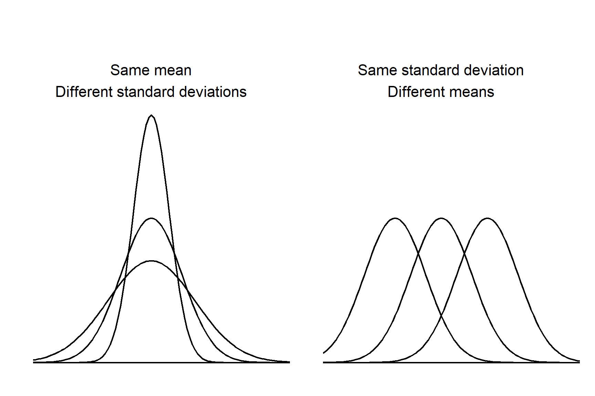
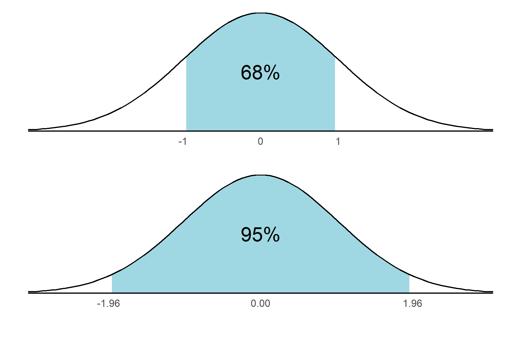
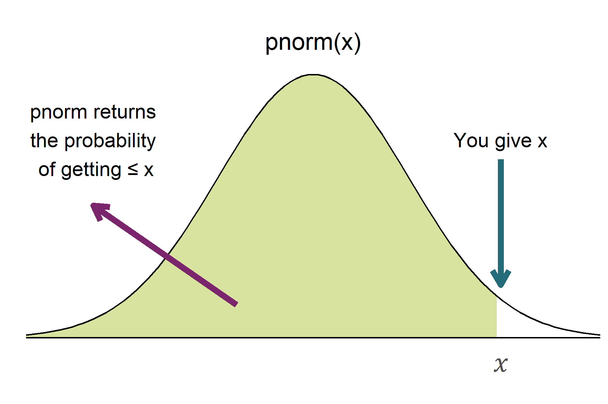

10 Confidence Intervals
Warning
You are reading a work in progress. This page is a first draft but should be readable.
10.1 What is a confidence interval?
When we calculate a mean from a sample, we are using it to estimate the mean of the population. Confidence intervals are a range of values and are a way to quantify the uncertainty in our estimate. When we report a mean with its 95% confidence interval we given the mean plus and minus some variation. We are saying that 95% of the time, that range will contain the population mean.
The confidence interval is calculated from the sample mean and the standard error of the mean. The standard error of the mean is the standard deviation of the sampling distribution of the mean.
To understand confidence intervals we need to understand some properties of the normal distribution.
10.2 The normal distribution
A distribution describes the values the variable can take and the chance of them occurring. A distribution has a general type, given by the function and is further tuned by the parameters in the function. For the normal distribution these parameters are the mean and the standard deviation. Every variable that follows the normal distribution has the same bell shaped curve and the distributions differ only in their means and/or standard deviations. The mean determines where the centre of the distribution is, the standard deviation determines the spread (Figure 10.1).
Whilst normal distributions vary in the location on the horizontal axis and their width, they all share some properties and it is these shared properties that allow the calculation of confidence intervals with some standard formulae. The properties are that a fix percentage of values lie between a given number of standard deviations. For example, 68.2% values lie between plus and minus one stadrad deviation from the mean and 95% values lie between +/-1.96 standard deviations., Another way of saying this is that there is a 95% chance that a value will lie between +/-1.96 standard deviations from the mean. This is illustrated in Figure 10.2.

R has some useful functions associated with distributions, including the normal distribution.
10.2.1 Distributions: the R functions
For any distribution, R has four functions:
- the density function, which gives the height of the function at a given value.
- the distribution function, which gives the probability that a variable takes a particular value or less.
- the quantile function which is the inverse of the Distribution function, i.e., it returns the value (‘quantile’) for a given probability.
- the random number generating function
The functions are named with a letter d, p, q or r preceding the distribution name. For example:
| Distribution | Density | Distribution | Quantile | Random number generating |
|---|---|---|---|---|
| Normal | dnorm() |
pnorm() |
qnorm() |
rnorm() |
| Binomial | dbinom() |
pbinom() |
qbinom() |
rbinom() |
| Poisson | dpois() |
ppois() |
qpois() |
rpois() |
| t | dt() |
pt() |
qt() |
rt() |
Searching for the manual with ?normal or any one of the functions (?pnorm) will bring up a single help page for all four associated functions.
The functions which are of most use to us are pnorm() and qnorm() and these are illustrated in Figure 10.4.

pnorm() function calculates the probability that a value is less than or equal to a given value.10.3 Confidence intervals on large samples
\[ \bar{x} \pm 1.96 \times s.e. \tag{10.1}\]
95% of confidence intervals calculated in this way will contain the true population mean.
Do you have to remember the value of 1.96? Not if you have R!
qnorm(0.975)
## [1] 1.959964Notice that it is qnorm(0.975) and not qnorm(0.95) for a 95% confidence interval. This is because the functions are defined as giving the area under to the curve to the left of the value given. If we gave 0.95, we would get the value that put 0.05 in one tail. We want 0.025 in each tail, so we need to use 0.975 in qnorm().
TO-DO pic
10.3.1 Example in R
TO-DO
10.4 Confidence intervals on small samples
The calculation of confidence intervals on small samples is very similar but we use the t-distribution rather than the normal distribution. The formula is:
\[ \bar{x} \pm t_{[d.f.]} \times s.e. \tag{10.2}\]
The t-distibution is a modified version of the normal distribution and we use it because the sampling distribution of the mean is not quite normal when the sample size is small. The t-distribution has an additional parameter called the degrees of freedom which is the sample size minus one (\(n -1\)). Like the normal distribution, the t-distribution has a mean of zero and is symmetrical. However, The t-distribution has fatter tails than the normal distribution and this means that the probability of getting a value in the tails is higher than for the normal distribution. The degrees of freedom determine how much fatter the tails are. The smaller the sample size, the fatter the tails. As the sample size increases, the t-distribution becomes more and more like the normal distribution.
10.4.1 Example in R
TO-DO